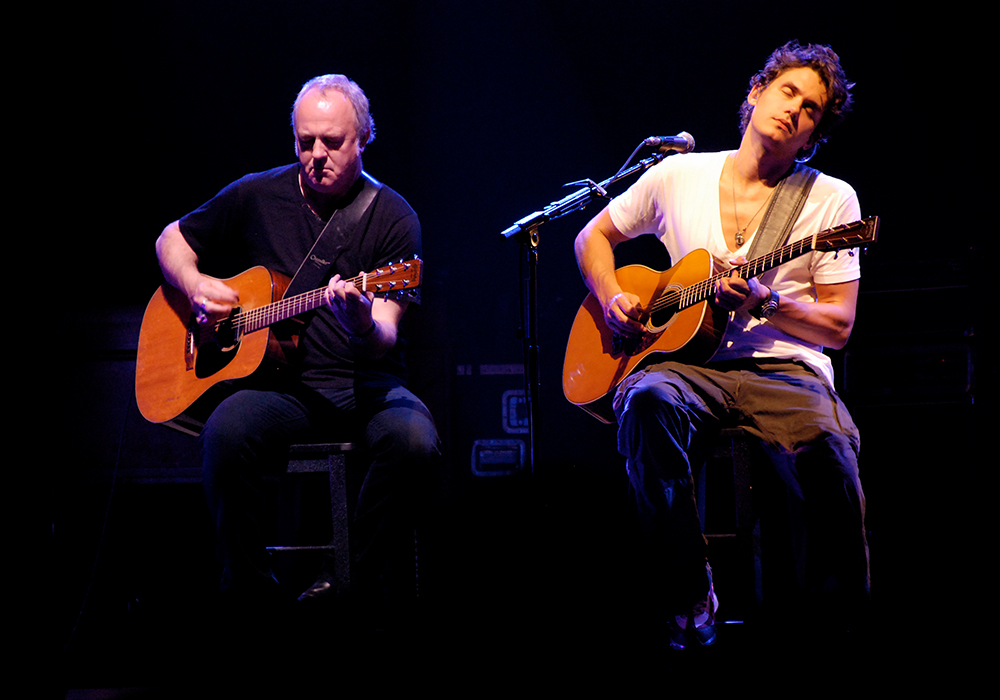

Tim Buckley
Tim Buckley, the father of the late Jeff Buckley, was know for his acoustic ballads. He's pictured here with his Guild acoustic guitar.
Jack Johnson
Jack Johnson, the Hawaiian native known for his soft acoustic style, is pictured here with his acoustic guitar.
Johnny Marr

Johnny Marr, who co-lead the world-renowned 1980s band "The Smiths" alongside Steven Patrick Morrissey, is pictured here with his Fender Jaguar electric guitar.
Jimi Hendrix
Jimmy Hendrix, the rock and roll legend known for incorporating jazz chords, rock scales and funky pedals to create his signature psychedelic sound, is pictured here with his Fender Stratocaster.
Tim Reynolds

Tim Reynolds, the acoustic soloist known for his work alondside Dave Matthews Band's frontman, is pictured here with his Martin acoustic guitar.
John Mayer
Singer and songwriter John Mayer (right) is best known for his pop and blues fusion hits that bring to life catchy melodies with his signature Martin guitars. Here's he's pictured with guitarist Robbie McIntosh at a concert in Los Angeles, California.
Stevie Ray Vaughan

Texas blues legend Stevie Ray Vaughn is known as the musical father of many of today's aspiring guitarists. He is pictured here with his Fender Stratocaster.
Ben Harper
Acoustic guitar player Ben Harper has been internationally known since the early 1990s for his humanitarian and protest-centered songwriting. He's pictured here with his Martin guitar.